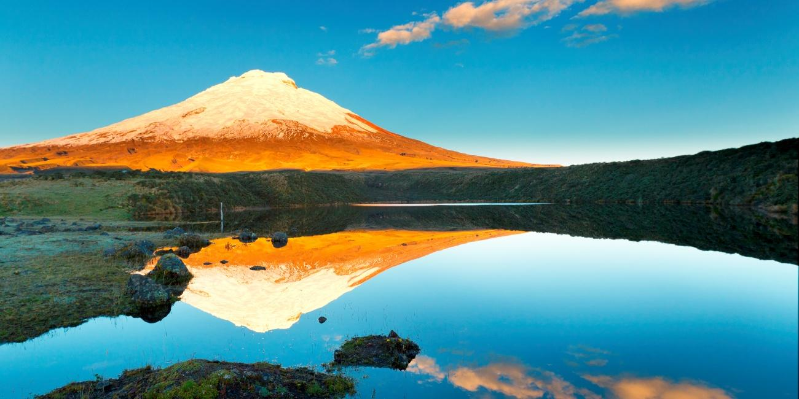
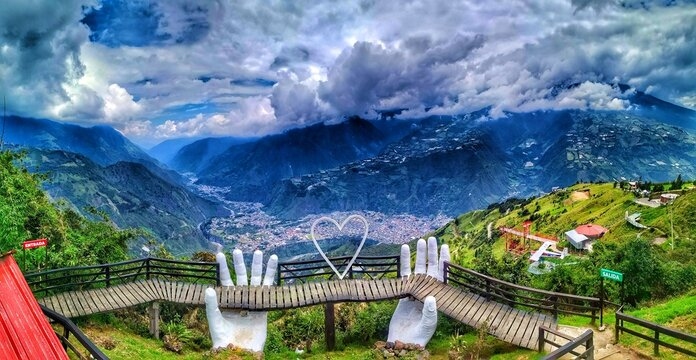

Meraviglie del Territorio
Un viaggio ravvicinato tra gli ecosistemi e i paesaggi mozzafiato che rendono unico questo angolo di mondo.

Le Isole Galápagos
Situate a circa 1.000 km dalla costa continentale, queste isole vulcaniche ospitano specie animali introvabili altrove, come le iguane marine e le tartarughe giganti. Furono la chiave di volta per gli studi evolutivi di Charles Darwin.

Il Vulcano Cotopaxi
Imponente e maestoso, con i suoi 5.897 metri è uno dei vulcani attivi più alti del mondo. Il suo cono perfetto, ricoperto da ghiacci perenni, domina il paesaggio andino ed è meta di alpinisti ed escursionisti da tutto il pianeta.

Baños de Agua Santa
Conosciuta come la "Porta dell'Amazzonia", Baños è una splendida località immersa in una valle verdeggiante ai piedi del vulcano attivo Tungurahua. È celebre per le sue sorgenti termali curative, la spettacolare cascata Pailón del Diablo e le altalene sospese nel vuoto che offrono panorami incredibili.